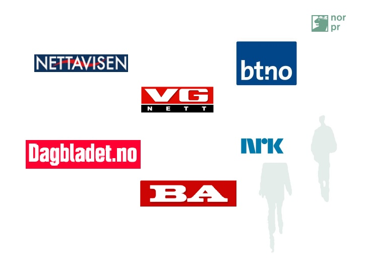

Risiko på nett
Sosiale medier kan oppleves som sterkt sosialt konsentrert, for vi må forholde oss til så mange mennesker på éngang. Livet på skjermen kan dessuten virke mer alt oppslukende enn virkeligheten. Teknologien presser ikke bare fram tallrike muligheter, vi blir også konfrontert med mange flere mennesker og nettverk enn det vi gjorde før Internett og de det medfører. Er vi trygge på nett?
Vi i Norge er stor brukere av digitale mediersammenlignetmedmangeandrelandiEuropa.Den britiske medieforskeren Sonia Livingstone har beskrevet denneutviklingen som en «bedroomculture», der vårt sosiale liv og vår fritid flyttes fra det offentligerom, fragata og nærområdene, til det private rom med soverommet og digitalteknologi som hovedbase.Med den økende bruken av sosialemedier som Facebook, Instagram, Twitter og Snapchat kan vi jokalledeten «hjemmekjær» digitalkultur. Da er det viktig å undersøke hvor trygge vi er i våre egne hjem–på sosiale medier. Risiko eller utrygghet på nett er ofte forbundet med personvern problematikk, digitalmobbing, trusler og spredning av nakenbilder på Internett.Kommunikasjonen på Internett er preget av anonymitet, og det kan øke sannsynligheten for både mer vågalat ferd og økt aggresjon i oppførselen mot andre. Dette er det viktig å være klarover, så vi kan unngå eller takle farer knyttet til Internett og digital kommunikasjon.

Tekst kilde: Kode 1 - Informasjonsteknologi (Gløer,Olav langslet 2017) bilde av slideshare.net